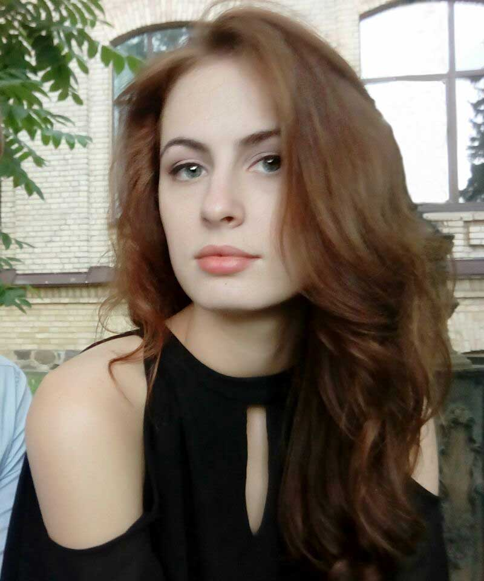

Anna Hrubar
Resume

Enthusiastic UX/UI Designer eager to contribute to team success through hard work,
attention to detail,
constant learning and improvement.
Social Media
 Linkedin - Anna Hrubar
Linkedin - Anna Hrubar
Phone +380962793189
E-mail anna3grybar@gmail.com
Work History
Content Manager
2019-04 - 2021-03
- Worked with a great deal of information, analyzed spreadsheets with a lot of data.
- Prepared content for uploading on the website.
- Corrected different errors on the website.
- Collaborated with other specialists.
- Optimized work process by implementing automatization of a different scenarios.
Hostess
2016-02 - 2018-09
- Managed the crew members of the restaurant hall.
- Communicated with guests and resolved conflict situation.
- Hosted birthdays parties.